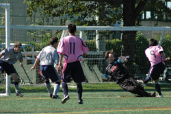
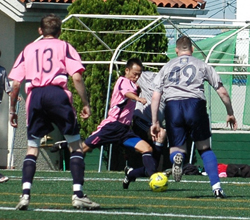
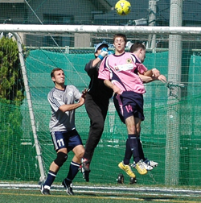

|
YCAC, Sunday 11th October.
Perfect weather and a great surface greeted the Panthers upon arrival at YCAC on Sunday morn. At the other side of the ground the Silver and Navy were being put through their paces in a pre-match warm-up and were clearly up for it. The Panthers after a strong start to the season lined up feeling confident but after a close pre-season encounter against the seconds, they knew that nothing could be taken for granted.
The match started with the Panthers keeping the ball relatively well and pushing up the field resulting in a couple of corners, blocked shots from distance and the occasional long throw-in from Zwart. YCAC 2nds are team that know how to play together and they were quite comfortably holding the pinks at bay with some solid challenges and by keeping their shape well. The ball wasn't sticking in the middle for the Panthers and when the long ball from the back went looking for Sho up front, more often than not it was intercepted by a YCAC head, knee or thigh.
YCAC were mopping up nicely and were breaking forward well. They took the lead and then doubled it shortly after due to some strong forward play from Andy up front. Both times his hold up play and flick-ons taking Panthers out of position and leaving gaps at the back. These gaps were gleefully filled with a nice finish and glancing header from YCAC. Despite their territorial domination, the Panthers found themselves 2 nil down.
The Panthers had started the season on the very same pitch and had mounted a remarkable comeback, so with this in mind they started to play the ball through midfield a little better. Through balls that were previously hitting defenders started to hit the attackers (on a couple of occasions literally) as the Panthers tried to find some rhythm. After some good possession through the back and then midfield, Barua picked out a nice through ball which found sharp shooter Sho in some space in the box. He calmly slotted it home. 2-1 YCAC.
Timing is a key element in business, in the bedroom and on the footie pitch. Perhaps a late night watching Argentina scrape past Peru in the World Cup Qualifiers had an effect on the ref but inexplicably he blew for half time after 35 minutes.
After some remonstrating in Japanese and Spanish from both sides, as the teams kicked off for the second half, most players on both sides did so on the understanding that to compensate, the second half would be 45 minutes long. Shooting towards the clubhouse and aiming for the same goals of their memorable comeback of the opening day, the Panthers really took the game to their opponents in the 2nd half. The passing was becoming more controlled and with the ever-vociferous Lennon calling the shots from the back, an equalizer was on the cards. Ma moved in from the left and was starting to have a strong influence on the game, inter-linking nicely with Sho and Mori in midfield. James Francis whipped in a great cross for Tom to head narrowly over before Ma finally deservedly drew the Panthers level with a stunning goal. Leaving 3 defenders in his wake from the left, he cut inside and buried a bullet of a shot into the left corner, leaving the keeper no chance.
It was a fair and full-blooded match and the ref didn’t need to send a player off from each side with 15 minutes to go. The challenge from the YCAC centre-half was worthy of a yellow and so was the reaction to it from the Panther in Pink.
Time was running out but the Panthers pushed forward in search of the winner, Kei smashing it wide late on. It was again Ma who had the final say, dancing through a tiring defense before rounding the keeper to seal the win for the Panthers. The ref blew after a generous 46 minute second half but considering the red cards, it could be argued that all in all he played a total of 81 minutes or so, mas o menos. Things like this even themselves out over the course of a season and the Panthers will look forward to the reverse fixture later this season. Good effort all round.
Report by Ben Cordier
|